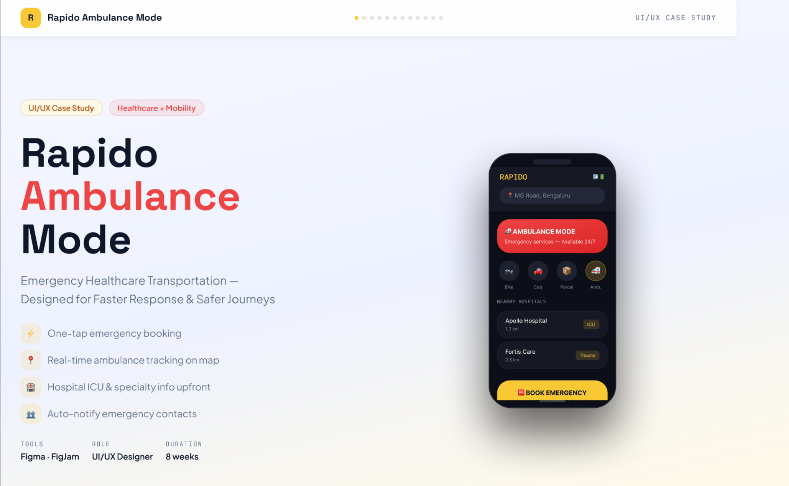
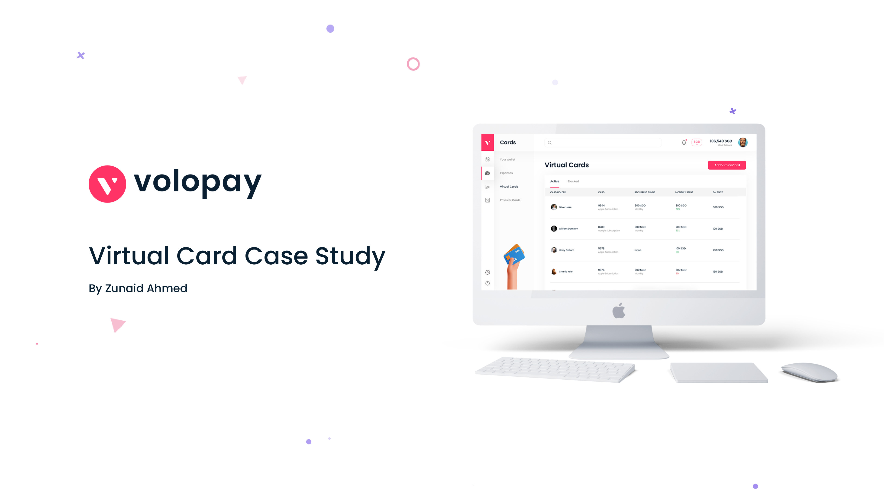
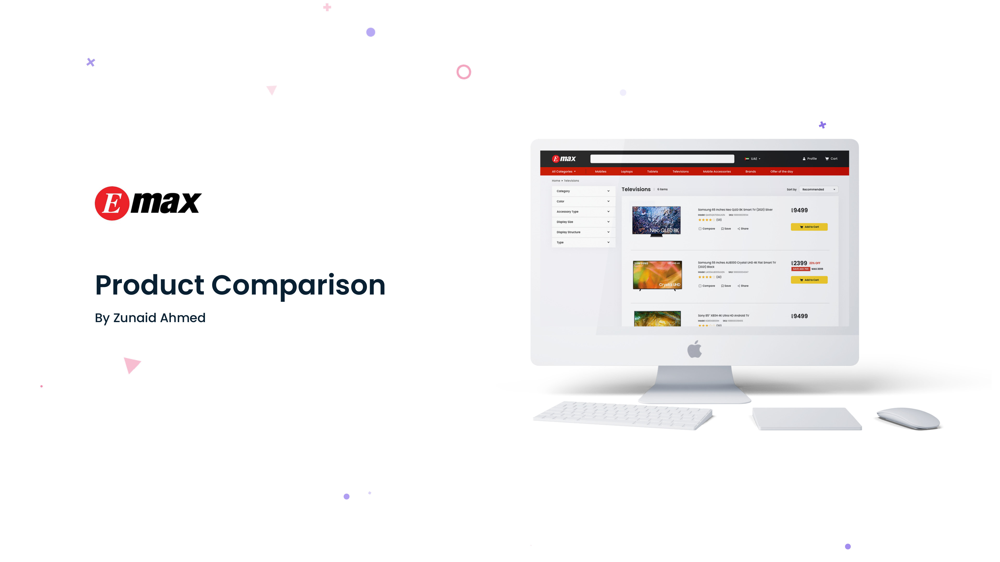
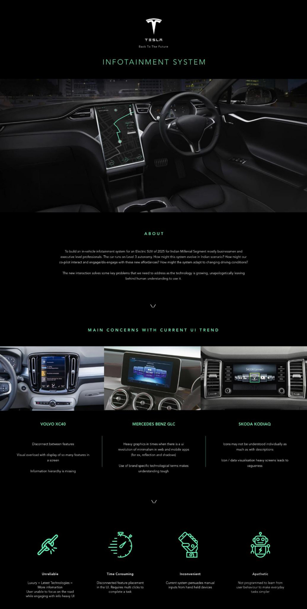
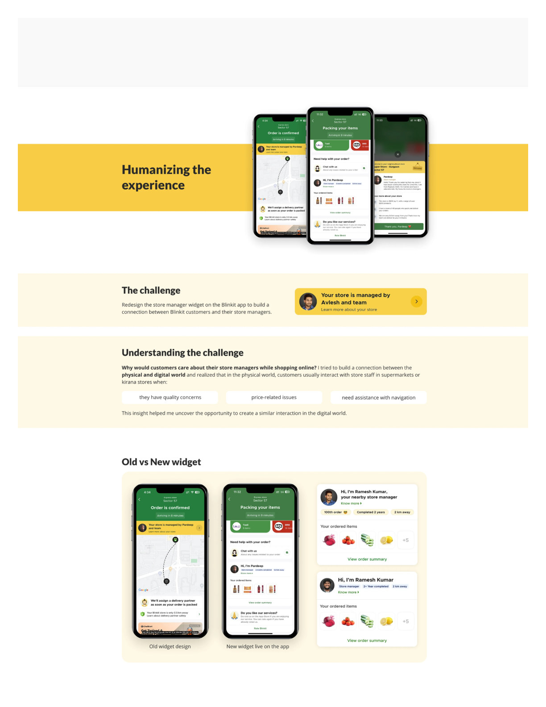
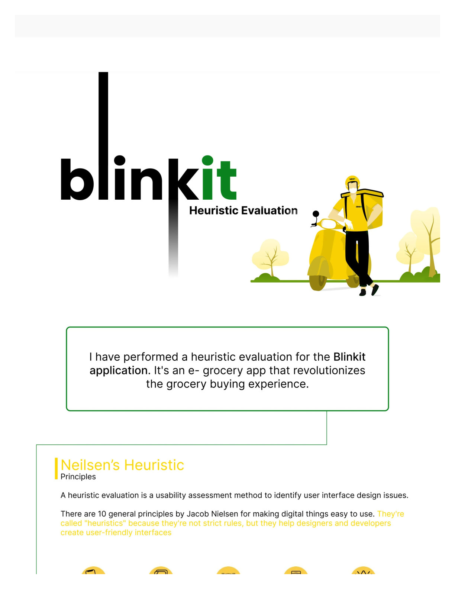
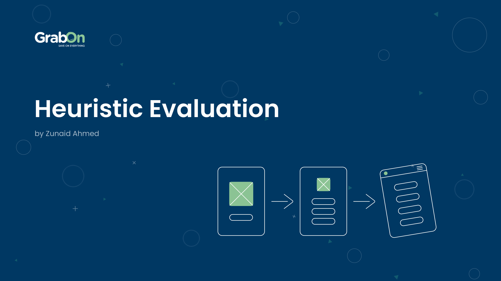

Native, not flattened
Every output is editable Figma: auto-layout, real text, styles. Designers can pick it up and keep going.
Open to work · Senior Product Designer · Hyderabad
I design products people trust, and the design agents, automated workflows and UX intelligence systems that make teams ship them faster. Creator of UX Direct: an AI UX designer that works natively inside Figma.
>
01 · Flagship project
A Figma plugin and design agent I'm building. It takes a brief, reads the canvas, writes native Figma layers, preserves your source content and checks its own work against objective quality criteria before it hands anything back.
Illustrative simulation of the agent loop. The real plugin runs against live Figma files.
Every output is editable Figma: auto-layout, real text, styles. Designers can pick it up and keep going.
The agent preserves source content instead of inventing copy, so nothing quietly changes between brief and canvas.
Objective quality criteria run on every pass. Failures trigger iteration, which cuts manual correction.
I designed the workflow, the quality bar and the design-system rules the agent follows. People approve before anything is written.
02 · UX intelligence system
Behind UX Direct sits an intelligence layer: it audits real sites, benchmarks them against peers, proposes better information architecture, and learns from design feedback.
The system crawls a site, builds its page inventory and journeys, and gives every later step a shared map to work from.
Each page is evaluated against the same heuristics and accessibility criteria, so findings are comparable across pages and across time.
Sample output shape, not client data.
Run the same audit on competitors and see where a product leads, trails or is simply different, before a single screen is redesigned.
Illustrative layout.
Audit and benchmark evidence feed an improved information architecture, so redesign starts from structure, not from taste.
Approved references and designer feedback are stored as reusable knowledge, with retrieval evals to check that what the agent recalls is actually useful. Client-specific findings stay separate from generalised, approved rules.
03 · Automated design workflow
How I use AI across a product cycle: automate the repeatable, keep people on the judgement calls.
AI clusters notes and flags patterns. I decide what matters.
Human decidesAutomated heuristic and accessibility sweeps give a consistent baseline.
Agent runsEvidence-backed IA proposals, reviewed and reshaped by the designer.
Agent + humanDesign agent writes native layers from the system's tokens and rules.
Agent runsObjective checks catch spacing, contrast and content drift.
Agent runsDeveloper-ready specs, tokens and docs, API-aware from day one.
Human approves04 · Selected work
Own product · Healthcare · AI-native · 2026
A 0→1 workflow platform that helps clinical trial coordinators screen eligibility faster, without blindly trusting an AI verdict. Protocol documentation, participant details and real-time safety signals live in one workspace.
Human-AI interaction · trust & explainability · decision support
Read case study →
Mobility · Healthcare
Emergency booking cut from a 15–20 minute phone scramble to a guided, sub-60-second flow.
4.2× faster · 91% satisfaction · 68% lower panic score
Read case study →
Fintech · B2B SaaS
A single-panel flow for accountants to issue, assign and track cards with cost always in view.
Fewer steps · multi-currency · always-visible CTC
Read case study →
Ecommerce · Responsive web
Four-product, spec-by-spec comparison for the UAE's largest electronics retailer.
Targets 34% of high-value purchase decisions
Read case study →
Automotive · Concept
A 14-screen dark HMI for Level-3 autonomy on Indian roads: glanceable, with progressive disclosure.
Glance-optimised · co-pilot legibility
Read case study →
Q-commerce · Mobile
A humanised checkout moment: from impersonal "team" copy to a personal "I'm packing your order".
First-person copy · milestone badges · live context
Read case study →
UX research · Audit
A full Nielsen 10-heuristic review mapping visibility, error-prevention and recall gaps.
10 heuristics · gaps in H3, H8, H9
Read case study →
UX research · Redesign
Heuristic evaluation of coupon redemption, then a thumb-reachable, one-handed redesign.
Less code-copy friction · ergonomic layout
Read case study →05 · About
I'm a product designer with 6+ years across enterprise SaaS, native Android, fintech and healthcare. I work best where the problem isn't fully defined: competing constraints, dense information, high stakes.
Lately I've been moving design from "tool I operate" to "system I direct": building an AI-native design system, wiring AI into ideation, prototyping and documentation, and creating UX Direct so agents can do the repeatable work while designers keep the judgement.
I'm comfortable in code (HTML, CSS, JS, React, Next.js, REST, OpenAPI) and speak engineer, so the handoff is never the weak link.
06 · Experience
Mar – Jul 2026
2022 – 2026
2020 – 2022
07 · Toolkit
Claude, Claude Code, Claude Design, Figma Make, ChatGPT, GitHub Copilot, prompt-based prototyping, Figma plugin and agent workflows
Figma, FigJam, interaction design, responsive and adaptive UI, Material Design, Miro, Maze
Design tokens, component libraries, documentation, developer-ready specs and handoff
Interviews, usability testing, heuristic evaluation, IA, user flows, A/B testing
WCAG 2.1 AA, keyboard navigation, focus states, contrast validation, inclusive design
HTML, CSS, JavaScript, React, Next.js, Tailwind, REST, OpenAPI, Postman, GitHub, Vercel, Cloudflare
↑↓ navigate · Enter go · Esc close